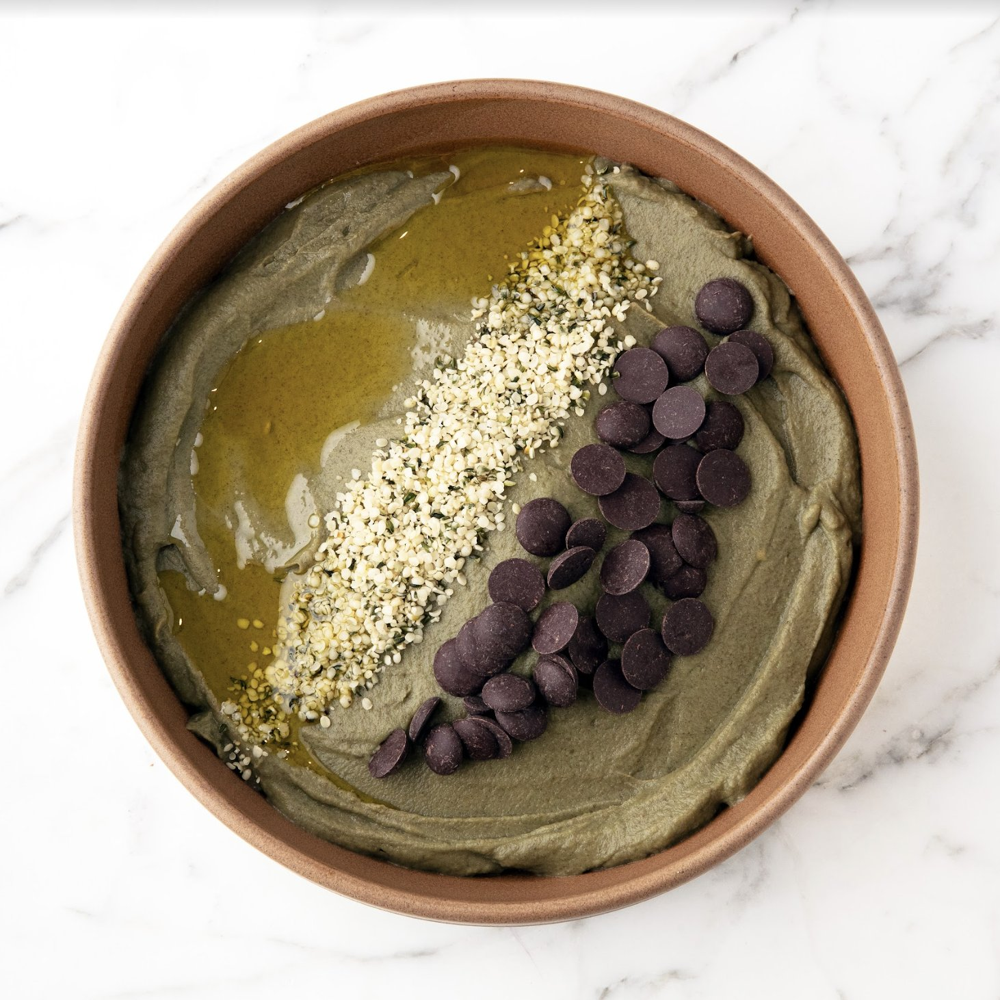

Super Veggie

Description
Super Veggie is an integral component of Bryan Johnson's blueprint diet, embodying his daily eating protocol. This blend of vegetables is meticulously chosen for its health benefits and is a staple in his everyday diet.
Ingredients
- Black Lentils: About 45 grams dry, which yields approximately 150 grams when cooked. These lentils are a great source of protein and fiber.
- Broccoli: 250 grams, including both the head and stalk, offering a range of vitamins and minerals, and a high concentration of sulforaphane.
- Cauliflower: 150 grams, known for its antioxidant properties.
- Mushrooms: Shiitake or Maitake, 50 grams, valued for their immune-supporting qualities.
- Garlic: 1 clove, adding flavor as well as health benefits.
- Ginger Root: 3 grams, known for its anti-inflammatory effects.
- Lime Juice: From 1 lime, to add a fresh, tangy taste.
- Cumin: 1 tablespoon, for its distinct aroma and digestive properties.
- Apple Cider Vinegar: 1 tablespoon, help lower blood sugar levels
- Hemp Seeds: 1 tablespoon, rich in healthy fats and proteins.
- Extra Virgin Olive Oil: 1 tablespoon, drizzled after preparation for healthy fats.
How to Cook Super Veggie from Scratch
Vegetable Preparation
- Weigh and Cook: Measure the broccoli, cauliflower, mushrooms, ginger, and garlic. Boil or steam them until tender (7-9 minutes).
- Lentils: Boil black lentils until they're al dente (18-20 minutes), then drain and rinse.
Assembling the Dish
- Blending: Optionally, blend the cooked ingredients for a smoother texture.
- Finishing Touches: Sprinkle with hemp seeds for added nutrition and texture.
- Our Favorite Toppings: Super Veggie meals are not complete without various toppings, just like how you add toppings to your oatmeals. We have been eating Super Veggie as breakfast for a year now and want to share some of our favorite toppings: